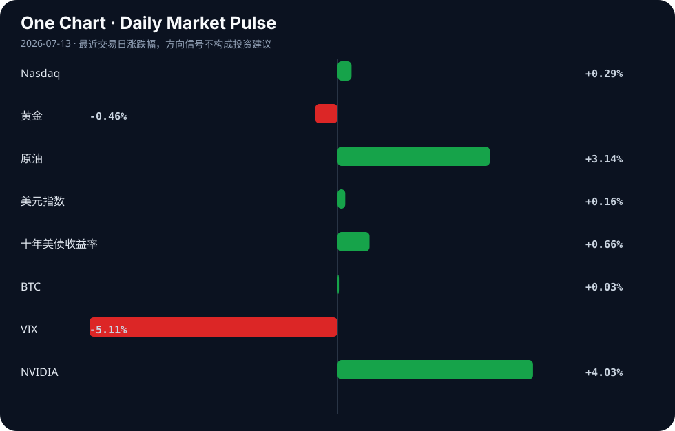

Daily Intelligence
2026-07-13｜Monday
Today’s Thesis｜今日一句话
AI的狂飙正受制于成本与隐私的物理约束，迫使产业从“唯大模型论”转向“小而美与本地化”；同时宏观资本在增长温差中涌入避险资产，技术叙事与资本定价的反身性正在逆转。
① Executive Summary｜30 秒
- AI：AI发展正转向小模型、本地记忆与软硬件协同设计，打破“越大越好”的神话 [A17][A19][A21]。
- 商业：汽车行业陷入停滞而航空航天业飙升 [B4]；RWA永续合约突破1000亿美元，标志着加密市场结构成熟 [B19]。
- 宏观：GDP增长5%与微观体感寒冷并存 [B5]；IEA预测疫情后石油需求首次下降 [B8]，资本逃向定期存款 [B11] 与白银 [B7]。
② AI Daily
小模型与协同设计打破算力军备竞赛
What Happened AI客户开始认同“小即是美”的模型架构 [A17]，Nvidia等厂商推广硬件友好的LLM协同设计 [A21]。 Why It Matters 边际算力收益递减与成本约束正在终结单纯参数规模的竞赛，效率优先成为产业新共识。 Second-order Effect 云巨头垄断松动 → 边缘侧与端侧AI推理占比上升 → 芯片架构走向碎片化与定制化。 算力成本约束 → 模型小型化与软硬件协同设计 → 边缘侧推理占比上升
本地化持久记忆重塑隐私与控制权
What Happened 针对AI助手的持久记忆协议（如MCP扩展）涌现 [A8]，开发者强调“记忆在本地机器、受用户控制” [A19]。 Why It Matters 无状态交互是当前AI助手的致命缺陷，而云端记忆引发严重隐私担忧，本地化是同时解决上下文断裂与数据主权的唯一解。 Second-order Effect 个人专属智能体规模化落地 → 数据主权立法加速 → 云厂商中心化记忆存储商业模式受挫。 隐私焦虑与上下文断裂 → 本地化持久记忆协议诞生 → 个人专属智能体规模化落地
就业错配证伪“AI替代”恐慌叙事
What Happened 能源工程师直言“AI将取代你的工作”是荒谬的 [A1]；招聘者找不到人、新毕业生找不到工作，原因并非AI [A7]；爱思唯尔调查显示不到一半的研究人员实际使用AI工具 [A15]。 Why It Matters AI替代白领的叙事与劳动力市场的结构性错配现实严重脱节，技术采用速度远低于舆论预期。 Second-order Effect AI培训与认证市场繁荣 → 劳动力市场两极分化加剧 → AI泡沫预期被宏观现实延迟修正。 技能错配 → 招聘与就业双冷 → AI替代叙事证伪
③ Business Daily
制造业：冰火两重天的需求重构
汽车行业陷入停滞，而航空航天业强劲飙升 [B4]。这并非简单的周期轮动，而是资本在重新定价高壁垒与低壁垒制造业：面对金融条件偏紧与需求放缓，消费级耐用品（汽车）首当其冲，而具备确定性与技术护城河的航空航天成为避风港。
金融：RWA的链上流动性成熟
RWA（真实世界资产）永续合约6月交易量突破1000亿美元 [B19]。这标志着加密金融正从原生投机转向映射现实世界资产的风险对冲，链上杠杆正在为传统资产提供流动性出口。
科技：AI基础设施的效率拐点
AI模型协同设计成为开发者焦点 [A21]。算力供给的瓶颈不再仅靠堆叠GPU解决，而是通过重塑模型底层以适配硬件特性，这标志着AI基础设施从“粗放扩张”转入“精耕细作”。
④ Macro Observation｜机制分析
世界正在发生什么？ 宏观数据与微观体感出现显著温差：GDP录得5%增长，但微观主体普遍感觉赚钱困难 [B5]。市场风险偏好看似改善（超4500股上涨 [B17]），但资本实质上在向定期存款 [B11] 和白银 [B7] 等避险与硬资产流动。
为什么发生？ 结构性错配导致增量分配极度不均。流动性注入推高了资产价格，但未有效穿透至工资与就业端 [A7]。IEA预测全球石油需求自COVID以来首次下降 [B8]，暗示实体经济动能实质性放缓，与金融市场的风险偏好形成背离。
资本如何流动？ 资本呈现明显的“防御性多头”特征：一方面参与股市反弹，另一方面增配定期存款 [B11] 与白银 [B7] 对冲法币贬值与增长失速。[推断] 原油价格上涨（+3.14%）与IEA需求下降预测的矛盾，暗示当前油价受地缘溢价驱动而非需求驱动，这是典型的滞胀信号组合。
接下来关注什么？ 关注风险资产与宏观现实的收敛机制。若石油需求下降被数据证实，而地缘溢价无法维持，原油与成长股的同步上涨将终结。同时追踪定期存款高增是否引发银行信贷扩张受阻的负反馈循环。
⑤ Signal Dashboard
| 指标 | 最新值 | 今日 | 信号 |
|---|---|---|---|
| Nasdaq | 26,281.61 | ↑ +0.29% | 中性 |
| 黄金 | 4,085.40 | ↓ -0.46% | 避险需求回落 |
| 原油 | 73.65 | ↑ +3.14% | 通胀压力上升 |
| 美元指数 | 101.13 | ↑ +0.16% | 金融条件偏紧 |
| 十年美债收益率 | 4.57 | ↑ +0.66% | 成长估值承压 |
| BTC | 63,821.15 | → +0.03% | 中性 |
| VIX | 15.03 | ↓ -5.11% | 风险偏好改善 |
| NVIDIA | 210.96 | ↑ +4.03% | 风险偏好改善 |
⑥ Deep Insight
“AI替代”与“招工难”的宏观错觉：为何结构性约束正在凌驾于技术叙事之上
当前舆论场存在一个巨大的撕裂：一方面是“AI将取代所有白领”的恐慌叙事，另一方面是招聘者找不到人、新毕业生找不到工作的现实困境 [A7]。能源工程师直言“AI将取代你的工作”错得可笑 [A1]，而爱思唯尔对3000名研究人员的调查也显示，不到一半的人在实际使用AI工具 [A15]。这揭示了一个极易被忽略的非共识视角：我们正处在“技术叙事过度超前”与“宏观结构性约束滞后”的错位期，真正主导当下就业与资本流向的不是AI的能力边界，而是经济系统的内生摩擦力。
宏观数据显示GDP增长5%，但微观体感却是赚钱难 [B5]，这种“温差”的本质是资源错配与信心缺失。当储户疯狂涌入定期存款寻求安全回报 [B11]，当市场因政策信号与地缘政治而重新定价风险 [B20] 时，企业首要选择是冻结招聘并削减成本，而非部署未经验证且昂贵的AI系统。这里存在一个致命的反身性循环：AI替代叙事 → 员工消费与投资趋于保守（避险需求上升） → 宏观需求收缩 → 企业盈利预期下降 → 企业停止招聘 → 失业率上升 → 进一步强化AI替代叙事。在这个循环中，AI并未真正造成大规模失业，但对AI的恐慌叙事本身通过改变微观主体的避险行为，制造了宏观经济的冷感。
同时，AI自身的演进也受到物理与成本的硬约束。客户开始认同“小即是美” [A17]，开发者转向本地化记忆与隐私控制 [A19]，这不仅是技术路线的转向，更是对算力成本与数据合规约束的妥协。当技术无法在短期内创造增量财富，只能在存量市场进行零和博弈时，宏观的结构性温差就会无情地暴露出来。
反方观点：AI的替代效应只是被延迟了。当前的低采用率 [A15] 是因为模型成本过高且不够可靠，一旦“小而美”模型 [A17] 大幅降低部署门槛，采用率将呈J型曲线爆发，届时结构性失业将真正显现。
证伪条件：未来两个季度内，AI工具在白领群体中的渗透率突破80%，且全行业劳动生产率数据出现不可逆的跃升，同时企业招聘总需求（而非岗位结构）出现绝对值缩减。
⑦ Tomorrow Watch
1. 验证IEA全球石油需求下降预测的初步数据发布与实际油价走势的背离程度 [B8]。
2. 追踪Nvidia AI模型协同设计框架在开发者社区的采用率与基准测试结果 [A21]。
3. 关注本地化AI记忆协议（MCP扩展）在开源社区的标准化进展与安全审计 [A8][A19]。
4. 观察中国A股超4500股上涨后的资金持续性，验证其是否受定期存款外溢驱动 [B11][B17]。
5. 检查Q1定期存款14%增幅趋势是否在Q2延续，确认避险倾向是否加深 [B11]。
⑧ One Chart

VIX下降与纳斯达克上涨显示短期风险偏好改善，但十年期美债收益率与美元指数同步上行暗示金融条件正在收紧。股债市场的这种定价分歧表明，股市正在对流动性贴现，而债市正在对宏观紧缩定价，这种均衡极度脆弱。
⑨ Quote of the Day
“The most important thing is not to be smarter than others, but to be more disciplined than others.”
— Howard Marks
中文理解：重要的不是永远比别人聪明，而是在不确定性面前比别人更守纪律。
Why it matters today：这句话不是装饰，而是今天观察 AI、商业和宏观变化时的一个思考框架：先看机制，再看价格；先看约束，再看叙事。
⑩ Action Items｜今天值得思考什么
1. 验证你所在行业AI工具的实际渗透率与付费转化，拒绝被“AI替代”叙事裹挟 [A15]。
2. 比较小模型 [A17] 与巨模型在你特定业务场景中的总拥有成本（TCO）与延迟表现。
3. 追踪本地优先AI记忆架构 [A19] 对现有云数据合规与存储商业模式的冲击。
4. 关注IEA石油需求预测 [B8] 与实际原油价格之间的分歧，捕捉滞胀交易信号。
5. 思考“GDP增长” [B5] 与“定期存款激增” [B11] 之间的反身性：对未来的恐惧本身是否正在制造经济的现实减速？
信息边界
本报告事实部分严格受限于提供的AI SOURCES (A1-A24) 与 BUSINESS AND MACRO SOURCES (B1-B24)。来源多为Hacker News及Google News RSS聚合，时效覆盖2026年7月12日前后，可能存在滞后或二次转述偏差。市场数据反映最近交易日收盘或实时快照。重要判断与推断已作标注，请读者务必回到原文验证。
Sources
AI
- [A1：Energy Engineer Explains: "AI Will Take Your Job" Is Laughably Wrong [video]](https://www.youtube.com/watch?v=sQGZXrzykpU) — Hacker News · AI
- A7：Why recruiters can't find workers and new grads can't find jobs (it's not AI) — Hacker News · AI
- A8：Show HN: Adaptive Recall, persistent memory for AI assistants over MCP — Hacker News · AI
- A15：Elsevier's global survey of 3k researchers on use of AI tools — Hacker News · AI
- A17：AI customers are coming around to the idea that small is beautiful — Hacker News · AI
- A19：AI's memory. On your machine, under your control — Hacker News · AI
- A21：AI Model Co-Design: Hardware-Friendly LLM Design — Hacker News · AI
Business & Macro
- B4：Auto sector fails, aerospace soars - The Express Tribune — Google News · Global Economy
- B5：GDP增长5%，还是感觉赚钱难，四个数据说透“温差”真相 - 网易 — Google News · 行业
- B7：China’s Silver Accumulation and the Looming Fiat Currency Collapse 2026 - Discovery Alert — Google News · Markets Policy
- B8：IEA Forecasts First Global Oil Demand Drop Since COVID - HOKANEWS.COM — Google News · Global Economy
- B11：Q1'26 term deposits up 14pc as savers seek safe returns - The Financial Express — Google News · Markets Policy
- B17：爆发！超4500股上涨 - 新浪网 — Google News · 行业
- B19：RWA Perps Volume Surges Past $100B During June, Indicating Market Maturity - CryptoRank — Google News · Markets Policy
- B20：Markets reprice risks: Policy signals and geopolitical tensions drive sentiment - Kuwait Times — Google News · Markets Policy